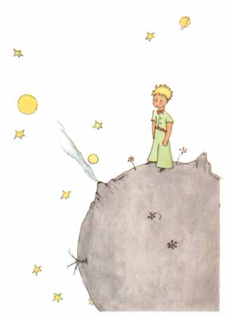
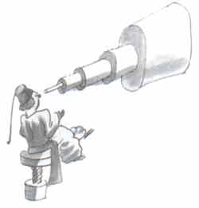
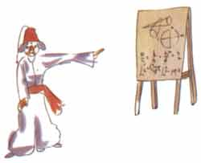
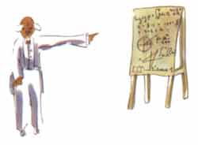
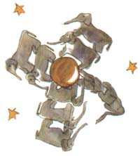
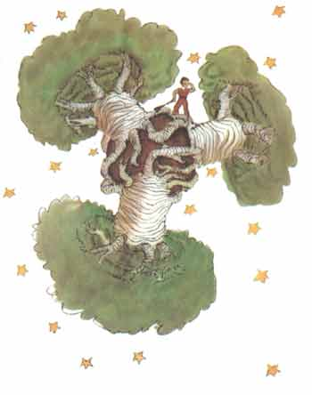
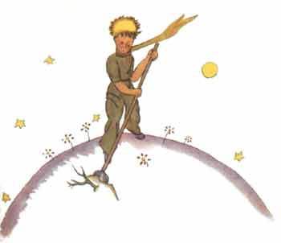

小王子目录
首页、1--3 章> 4--6 章
7--9 章
10-12章
13-15章
16-20章
21-23章
24-25章
26-27章
小王子作者
小王子解读与分析
小王子下载（PDF版）
小王子作者专题
小王子读后感集锦
《小王子》
[法] 圣埃克苏佩里
我还了解到另一件重要的事，就是他老家所在的那个星球比一座房子大不了 多少。

这倒并没有使我感到太奇怪。我知道除地球、木星、火星、金星这几个有名 称的大行星以外，还有成百个别的星球，它们有的小得很，就是用望远镜也很难 看见。当一个天文学者发现了其中一个星星，他就给它编上一个号码，例如把它 称作“325小行星”。
我有重要的根据认为小王子所来自的那个星球是小行星B612。这颗小行星仅 仅在1909年被一个土耳其天文学家用望远镜看见过一次。

当时他曾经在一次国际天文学家代表大会上对他的发现作了重要的论证。但 由于他所穿衣服的缘故，那时没有人相信他。那些大人们就是这样。

幸好，土耳其的一个独裁者，为了小行星B612的声誉，迫使他的人民都要穿 欧式服装，否则就处以死刑。1920年，这位天文学家穿了一身非常漂亮的服装， 重新作了一次论证。这一次所有的人都同意他的看法。

我给你们讲关于小行星B612的这些细节，并且告诉你们它的编号，这是由于 这些大人的缘故。这些大人们就爱数目字。当你对大人们讲起你的一个新朋友时， 他们从来不向你提出实质性的问题。他们从来不讲：“他说话声音如何啊？他喜 爱什么样的游戏啊？他是否收集蝴蝶标本呀？”他们却问你：“他多大年纪呀？ 弟兄几个呀？体重多少呀？他父亲挣多少钱呀？”他们以为这样才算了解朋友。 如果你对大人们说：“我看到一幢用玫瑰色的砖盖成的漂亮的房子，它的窗户上 有天竺葵，屋顶上还有鸽子……”他们怎么也想象不出这种房子有多么好。必须对 他们说：“我看见了一幢价值十万法郎的房子。”那么他们就惊叫道：“多么漂 亮的房子啊！”
要是你对他们说：“小王子存在的证据就是他非常漂亮，他笑着，想要一只 羊。他想要一只小羊，这就证明他的存在。”他们一定会耸耸肩膀，把你当作孩 子看待！但是，如果你对他们说：“小王子来自的星球就是小行星B612”，那么 他们就十分信服，他们就不会提出一大堆问题来和你纠缠。他们就是这样的。小 孩子们对大人们应该宽厚些，不要埋怨他们。
当然，对我们懂得生活的人来说，我们才不在乎那些编号呢！我真愿意象讲 神话那样来开始这个故事，我真想这样说：
“从前呀，有一个小王子，他住在一个和他身体差不多大的星球上，他希望 有一个朋友……”对懂得生活的人来说，这样说就显得真实。
我可不喜欢人们轻率地读我的书。我在讲述这些往事时心情是很难过的。我 的朋友带着他的小羊已经离去六年了。我之所以在这里尽力把他描写出来，就是 为了不要忘记他。忘记一个朋友，这太叫人悲伤了。并不是所有的人都有过一个 朋友。再说，我也可能变成那些大人那样，只对数字感兴趣。也正是为了这个缘 故，我买了一盒颜料和一些铅笔。象我这样年纪的人，而且除了六岁时画过闭着 肚皮的和开着肚皮的巨蟒外，别的什么也没有尝试过，现在，重新再来画画，真 费劲啊！当然，我一定要把这些画尽量地画得逼真，但我自己也没有把握。一张 画得还可以，另一张就不象了。还有身材大小，我画得有点不准确。在这个地方 小王子画得太大了些，另一个地方又画得太小了些。对他衣服的颜色我也拿不准。 于是我就摸索着这么试试那么改改，画个大概齐。我很可能在某些重要的细节上 画错了。这就得请大家原谅我了。因为我的这个朋友，从来也不加说明解释。他 认为我同他一样。可是，很遗憾，我却不能透过盒子看见小羊。我大概有点和大 人们差不多。我一定是变老了。
每天我都了解到一些关于小王子的星球，他的出走和旅行等事情。这些都是 偶然从各种反应中慢慢得到的。就这样，第三天我就了解到关于猴面包树的悲剧。
这一次又是因为羊的事情，突然小王子好象是非常担心地问我道：
“羊吃小灌木，这是真的吗？”
“是的，是真的。”
“啊，我真高兴。”
我不明白羊吃小灌木这件事为什么如此重要。可小王子又说道：
“因此，它们也吃猴面包树罗？”
我对小王子说，猴面包树可不是小灌木，而是象教堂那么大的大树；即便是 带回一群大象，也啃不了一棵猴面包树。
一群大象这种想法使小王子发笑：
“那可得把这些大象一只叠一只地垒起来。”

他很有见识地说：
“猴面包树在长大之前，开始也是小小的。”
“不错。可是为什么你想叫你的羊去吃小猴面包树呢？”
他回答我道：“唉！这还用说！”似乎这是不言而喻的。可是我自己要费很 大的心劲才能弄懂这个问题。
原来，在小王子的星球上就象其他所有星球上一样，有好草和坏草；因此， 也就有益草的草籽和毒草的草籽，可是草籽是看不见的。它们沉睡在泥土里，直 到其中的一粒忽然想要苏醒过来……于是它就伸展开身子，开始腼腆地朝着太阳长 出一棵秀丽可爱的小嫩苗。如果是小萝卜或是玫瑰的嫩苗，就让它去自由地生长。 如果是一棵坏苗，一旦被辨认出来，就应该马上把它拔掉。因为在小王子的星球 上，有些非常可怕的种子……这就是猴面包树的种子。在那里的泥土里，这种种子 多得成灾。而一棵猴面包树苗，假如你拔得太迟，就再也无法把它清除掉。它就 会盘踞整个星球。它的树根能把星球钻透，如果星球很小，而猴面包树很多，它 就把整个星球搞得支离破碎。

“这是个纪律问题。”小王子后来向我解释道。“当你早上梳洗完毕以后， 必须仔细地给星球梳洗，必须规定自己按时去拔掉猴面包树苗。这种树苗小的时 候与玫瑰苗差不多，一旦可以把它们区别开的时候，就要把它拔掉。这是一件非 常乏味的工作，但很容易。”

有一天，他劝我用心地画一副漂亮的图画，好叫我家乡的孩子们对这件事有 一个深刻的印象。他还对我说：“如果将来有一天他们出外旅行，这对他们是很 有用的。有时候，人们把自己的工作推到以后去做，并没有什么妨害，但要遇到 拔猴面包树苗这种事，那就非造成大灾难不可。我遇到过一个星球，上面住着一 个懒家伙，他放过了三棵小树苗……”
于是，根据小王子的说明，我把这个星球画了下来。我从来不大愿意以道学 家的口吻来说话，可是猴面包树的危险，大家都不大了解，对迷失在小行星上的 人来说，危险性非常之大，因此这一回，我贸然打破了我的这种不喜欢教训人的 惯例。我说：“孩子们，要当心那些猴面包树呀！”为了叫我的朋友们警惕这种 危险――他们同我一样长期以来和这种危险接触，却没有意识到它的危险性―― 我花了很大的功夫画了这副画。我提出的这个教训意义是很重大的，花点功夫是 很值得的。你们也许要问，为什么这本书中别的画都没有这副画那么壮观呢？回 答很简单：别的画我也曾经试图画得好些，却没成功。而当我画猴面包树时，有 一种急切的心情在激励着我。
啊！小王子，就这样，我逐渐懂得了你那忧郁的生活。过去相当长的时间里 你唯一的乐趣就是观赏那夕阳西下的温柔晚景。这个新的细节，是我在第四天早 晨知道的。你当时对我说道：
“我喜欢看日落。我们去看一回日落吧！”
“可是得等着……”
“等什么？”
“等太阳落山。”
开始，你显得很惊奇的样子，随后你笑自己的糊涂。你对我说：
“我总以为是在我的家乡呢！”
确实，大家都知道，在美国是正午时分，在法国，正夕阳西下，只要在一分 钟内赶到法国就可看到日落。可惜法国是那么的遥远。而在你那样的小行星上， 你只要把你的椅子挪动几步就行了。这样，你便可随时看到你想看的夕阳余辉……
“一天，我看见过四十三次日落。”
过一会儿，你又说：
“你知道，当人们感到非常苦闷时，总是喜欢日落的。”
“一天四十三次，你怎么会这么苦闷？”
小王子没有回答。
1-3章4-6章7-9章10-12章13-15章16-20章21-23章24-25章26-27章